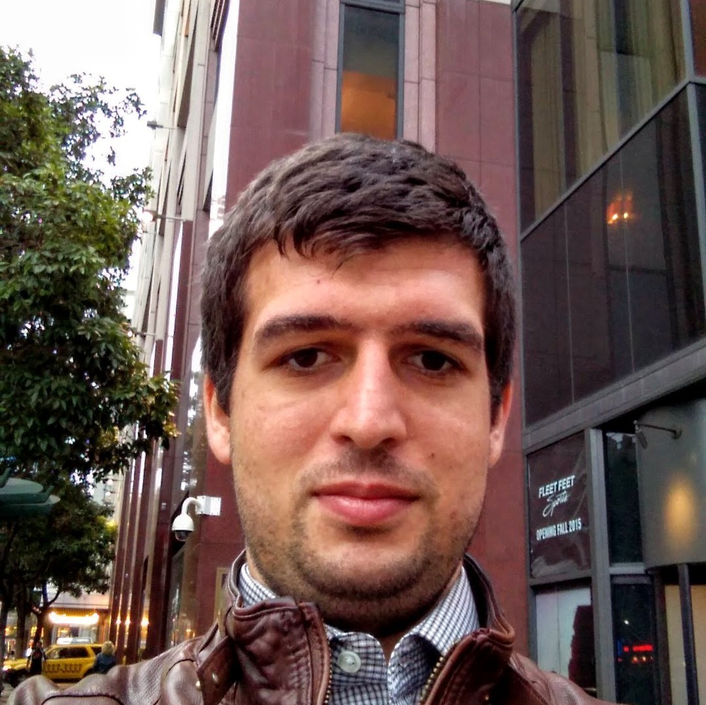
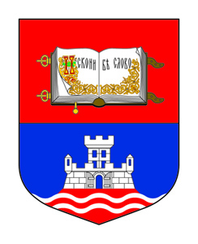

A bit about me
Well, more than just a bit. This is actually as detailed as was diligent to write.

Current status
Since working as Site Reliability Engineer - Software Engineer for Google Inc. in company headquarters located in Mountain View, California. My current work is focused on infrastructure and resource management.
I'm enrolled in Master degree program at University of Belgrade, School of Electrical Engineering. The program is focused on Software Engineering and my work is mainly on caching in distributed systems.
I'm passionate about teaching and sharing knowledge. I'm very interested in bringing computer science and computer engineering fundamentals to students of an elementary and middle school level.
When I'm not working I still have plenty to do. I enjoy learning new stuff and I'm very curious.
I like to hike and take walks. I enjoy listening to music. I especially love good jazz and classical music. I like watching classic movies and reading although I hardly find any time for it. I've started practicing magic recently and I've focused on card tricks. It's never a bad time for a good SciFi and when a group is right for a decent boardgame.
Past work
I've interned in TitanIM Pty. Ldt. as Software Development for a year (). I worked on system for improving flight paths for aeroplanes in simulations. I was also in charge of developing complete plugins system and appropriate API, writing documentation for it and helping clients develop plugins of their own. All software development was done with C++.
I was summer intern in NVIDIA twice, in summer of and summer of . Both times I was in resource management team of GPU driver, on a software side. My first internship project was focused on memory management improvements in SLI mode and my second internship project was developing infrastructure for signing code and integrating it with existing internal tools and systems.
I also interned in Nordeus in , where I was part of server team for a TopEleven game.

Past education
I've received a degree of Bachelor of Electrical and Computer Engineering from Department of Software Engineering at School of Electrical Engineering, University of Belgrade in Serbia.
My thesis was on scalable, distributed system for storing data. As part of the project, I developed proof-of-concept server application and client library that supported hashmap like operations across practically an infinite number of machines. I generate synthetic demand on the client side, varied parameters, and measured performance. I've continued working on the same system and for my master thesis, I'm measuring how different caching algorithms influence system performance.
As part of the program, I completed several projects of which I find several really interesting.
CAs a part of a team of three students implemented DEFLATE-like compression algorithm into fully-functional compression tool.C/C++I fully developed part of multithreaded preemptive 8086 OS kernel that was doing thread management. Part of the task was to implement support of semaphore and event concepts.MySQL, PHP, Python, JavaScriptI was part of four students team that developed Preferans web-game. I was only working on the back-end of the system and I was mostly focused on SQL part of the project.C/C++As part of System Software course, I developed emulator for object code. Emulator had the option to work in interpretive and JIT mode.- I wrote μJava compiler using CUPS (LALR parser generator) and existing lexical analyzer. For me, this project was a great insight into how compilers work and what part of processing happens in which point of a compiling process.
JavaFully developed a framework for simulations in queueing theory and used it to create an application that compares several scenarios. Framework enabled a user to get values by simulating system or just theoretical prediction according to Buzen's algorithm.MySQL, Java ServerFaces 2.x, Tomcat, AJAXI fully developed, both back and front end, web-app for scheduling and management of laboratory exercises. Application supported several roles (TA, student, demonstrator) and had calendar and billing systems integrated.
Teaching
As a lifelong learner I also enjoy helping others learn.
Since I'm participating in Applied Physics and Electronics seminar of Petnica Science center. For two years my primary concern was teaching students (high-school) basics of computer programming. We really did manage to get them interested and involved by teaching students new to computer programming basics of C programming language and having students who did encounter computer programming before try something for themselves in Processing.
From to early I was teaching assistant in Mathematical High School. I taught gifted 7th and 8th graders basics of computer programming and prepared them for regional and national level competitions. Classes were completely optional for students but attendance was always very high and students achieved very good results on competitions they took part in.
As a student at Department of Software Engineering, I was demonstrator on several courses related to Computer Science, Computer Engineering, and Mathematics. As a demonstrator I helped students with their homework and graded their work in the laboratory as well as some homework.